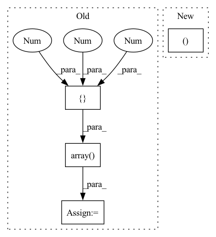

Pattern ID :15864
Before Change
return None
// Gimbal roll & pitch/tilt is assumed stabilized so only need yaw/pan
yaw_mask = np.array([1 , 0, 0 , 1 ]) // TODO: remove assumption
vehicle_yaw = (
messaging.as_np_quaternion(self.vehicle_geopose.pose.orientation) * yaw_mask
)After Change
self.get_logger().debug(
"Gimbal device set attitude FRD Euler angles "
"(roll, pitch, yaw): (%.2f, %.2f, %.2f)"
% (math.degrees(roll), math.degrees(pitch), math.degrees(yaw) )
)
compound_q = self.quaternion_multiply(In pattern: SUPERPATTERN
Frequency: 4
Non-data size: 4
Instances Fragment ID: 53627170
Project Name: hmakelin/gisnav
Commit Name: f5887ec750a7759c4fb9610403180070155a69f3
Time: 2023-04-03
Author: hmakelin@protonmail.com
File Name: gisnav/nodes/autopilot_node.py
M Class Name: AutopilotNode
N Class Name: AutopilotNode
M Method Name: gimbal_quaternion(1)
N Method Name: gimbal_quaternion(1)
M Parent Class: BaseNode
N Parent Class: BaseNode
M File Name: gisnav/nodes/autopilot_node.py
N File Name: gisnav/nodes/autopilot_node.py
M Start Line: 269
M End Line: 280
N Start Line: 310
N End Line: 327
Before Change
def test_variability_within_batch(self):
torch.manual_seed(42)
samples = np.array(
[[-0.25, -0.125, 0.0, 0.75, 0.5], [-0.25 , -0.125 , 0.0, 0.9, 0.5 ]],
dtype=np.float32,
)
samples = np.stack([samples] * 1000, axis=0)
sample_rate = 16000
augment = Shift(max_shift=1, shift_unit="samples", p=1.0)After Change
def test_variability_within_batch(self):
torch.manual_seed(42)
samples = torch.arange(4)[None, None ].repeat(1000, 2, 1)
samples[1] += 1
breakpoint()
augment = Shift(min_shift=-1, max_shift=1, shift_unit="samples", p=1.0) Fragment ID: 53626866
Project Name: asteroid-team/torch-audiomentations
Commit Name: 44eb932c9ebc8235e3174d5dd6b6dbccf08195d6
Time: 2020-11-27
Author: himion0@gmail.com
File Name: tests/test_shift.py
M Class Name: TestShift
N Class Name: TestShift
M Method Name: test_variability_within_batch(1)
N Method Name: test_variability_within_batch(1)
M Parent Class: unittest.TestCase
N Parent Class: unittest.TestCase
M File Name: tests/test_shift.py
N File Name: tests/test_shift.py
M Start Line: 276
M End Line: 287
N Start Line: 174
N End Line: 178
Before Change
export_path_list = []
cs = np.vstack(
[
np.ones((2, 3)),
np.array([0.31, 0.51, 0.74]),
np.array([0.75, 0.31, 0.30]),
np.array([0.36, 0.90, 0.38]),
np.array([0.50 , 0.39 , 0.64 ]) ,
np.array([1, 0.6, 0]),
]
)After Change
ps_curve = []
for ps_ in area_ps:
if ps_.ndim > 1:
ps_mean = np.zeros((ps_.shape[0] Fragment ID: 53627171
Project Name: obss/sahi
Commit Name: c358cc200a67ed985790bc19deccec5fe1c4e75d
Time: 2022-01-08
Author: 34196005+fcakyon@users.noreply.github.com
File Name: sahi/scripts/coco_error_analysis.py
M Class Name: AnonimousClass
N Class Name: AnonimousClass
M Method Name: _makeplot(5)
N Method Name: _makeplot(5)
M Parent Class:
N Parent Class:
M File Name: sahi/scripts/coco_error_analysis.py
N File Name: sahi/scripts/coco_error_analysis.py
M Start Line: 16
M End Line: 32
N Start Line: 31
N End Line: 43
Before Change
def get_distance(self, quad_state):
Get distance between current state and goal state
target = np.array([3 , -76 , -7 ])
quad_pt = np.array(list((quad_state.x_val, quad_state.y_val, quad_state.z_val)))
dist = np.linalg.norm(quad_pt - target)
return dist
After Change
dx = self.target[0] - quad_pt[0]
dy = self.target[1] - quad_pt[1]
dz = self.target[2] - quad_pt[2]
return dist, dx, dy, dz
def setGeoFenceCoords(self):
// x1, y1, x2, y2
self.geoFenceCoords = {} Fragment ID: 53627155
Project Name: rlturkiye/flying-cavalry
Commit Name: 7aaa5fbd7e34c0f3299673f9dc84b6a3cb9b72bd
Time: 2021-05-20
Author: muhammetkaratr@gmail.com
File Name: rllib/airgym/envs/drone_env.py
M Class Name: AirSimDroneEnv
N Class Name: AirSimDroneEnv
M Method Name: get_distance(2)
N Method Name: get_distance(2)
M Parent Class: gym.Env
N Parent Class: gym.Env
M File Name: rllib/airgym/envs/drone_env.py
N File Name: rllib/airgym/envs/drone_env.py
M Start Line: 181
M End Line: 184
N Start Line: 195
N End Line: 200